In development
A component that is in development means that the Egeria community is still building the function. The code is added continuously in small pieces to help the review and socialization process. It may not run, or do something useful - it only promises not to break other function. Expect to find git issues describing the end state.
Glossary Workflow OMVS¶
The Glossary Workflow Open Metadata View Service (OMVS) is a REST API designed to support UIs that enable the maintenance of glossary content using a controlled workflow process. It runs in a View Server and calls the Asset Manager OMAS to retrieve and make changes to the glossary.
Why use a controlled glossary workflow¶
The purpose of a controlled glossary workflow is to manage the visibility of glossary terms and any updates to them that are “in progress”. Typically, this visibility’s is restricted to the authors of the glossary terms and the approvers. Once approved, and incorporated back into the "live" glossary, the updates are visible to all.
For example, consider a glossary term called "customer identifier". The first version of the glossary term may just provide the display name and summary. The author of the glossary term plans to fill out the description and examples in version 2. Version 1 is published so that, for example, data stewards can begin linking it to the data assets describing the data landscape.
While the data stewards are creating semantic assignment links to this glossary term, the glossary term author needs to edit the glossary term properties. These changes need to be reviewed and possibly corrected before they are visible to the data stewards. As such they are made in a private copy of the glossary term. When the changes are complete, the properties from the copy are added to the glossary term that the data stewards are using. Thus version 2 is "published". The next time the data stewards query the glossary term, they see the updated properties.
Designing your glossary workflow process¶
Although the general idea is simple, there are a number of choices to make on how the workflow operates. This includes:
- How are updates grouped? For example, are glossary terms updated individually or grouped together in a batch.
- How complex is the approval process? For example, does it involve multiple approvers and what happens if the approvers request changes? Egeria has simple workflow capabilities, but a complex process is better handled in an external workflow engine.
- Are the glossary terms versioned? What constitutes a version change? Who decides?
- What type of revision history is required? Every save of a glossary term to the repository is a new version in the repository. However, does the team wish to have a version identifier that reflects how often it has been published, and whether it is a major or minor version. Do the team wish to add a description of the changes being made to the glossary terms (called the revision history). When are descriptions in the revision history created and by whom?
- How much access is needed to previous versions of a glossary term or glossary category, particularly once it has been approved?
Styles of glossary workflow operation¶
The different styles of glossary workflow provide choices on who is providing content, how decisions are made on what is accepted, how the updates are grouped, both for the review process and when they are published.
Where multiple glossaries are in play, each can operate a different style. The tabbed table below characterises some different styles of workflow processing - click on each tab to read about each style. They are only suggestions. The API is flexible enough to allow you to create you own style if you need to.
| Maintenance Style | Contributors | Controls | Limitations | Uses |
|---|---|---|---|---|
| Harvested glossary | Source glossaries. | Choice on which terms are included in the harvested glossary. | Glossary terms change without knowledge or agreement from the curators of the harvested glossary. | Organizing terms from standards, regulations and other external sources. |
| Multi-level glossaries | Upstream glossaries. | Choice on which terms are included, their exact content and whether updates are to be included. | Difficult for upstream glossaries to reconcile differences in their definitions. | Consolidating definitions from across areas of domain expertise in the organization. |
| Open contribution glossary | Subject-matter experts. | Choice on which terms are included, their exact content and whether updates are to be included. | Content is developed in narrow independent scopes, making it difficult to coordinate changes from different groups of subject-matter experts. | Development of new glossary content when the subject-matter experts are distributed across the organization (and beyond). |
| Release-controlled glossary | Glossary authoring team. | Coordination of all changes to the glossary, which terms are included, their exact content and when updates are to be included. | Changes are delayed waiting for the next release. | For glossaries that must present a coherent scope. |
Harvested glossary¶
Consider a situation where a new project needs to understand a new standard, or regulation, or a new field of operation. They may wish to collate and organize glossary terms from a variety of sources to help the team learn about the new terminology.
In the example below, the team working on a new sustainability initiative have assembled a glossary from the terms of other existing glossaries.

The harvested style of glossary helps teams that do not have the time/resources to create their own glossary terms.
Multi-level glossaries¶
Consider an organization that wants to build a shared glossary for all of its divisions. Each division has expertise in different topics and there is inconsistent use of terms both within and across the divisions.
A simple approach is for each division to have their own glossary to develop and agree on their terms. When a division has a term that they think should be in the company glossary they submit it for review. The term is reviewed by a cross-division team. If it is accepted, a copy of the term is added to the company glossary. If there are revisions to make, comments are passed back to the originating division.
Whether the term is accepted or not, the originating team is free to continue to make changes to their copy of the term. They can then choose when they submit an updated version to the company glossary for review.
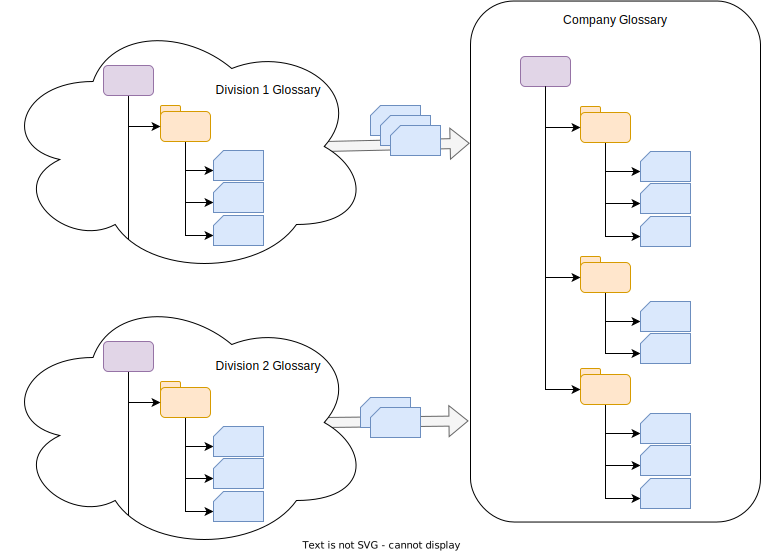
In this example, the company glossary’s content is controlled. All editing of terms happens in the division glossaries. There is little support to reconcile differences in the definition of a term across the divisions.
Open contribution glossary¶
An open contribution glossary style is for creating new glossary content using subject matter experts that are distributed across the organization and may be contributing glossary content on an ad hoc, or as needed basis.
The contributions are batched into small updates - for example, providing changes to a couple of terms plus adding a new relationship. The batches are reviewed by the team that own the central glossary and if they are acceptable, they are included in the glossary.
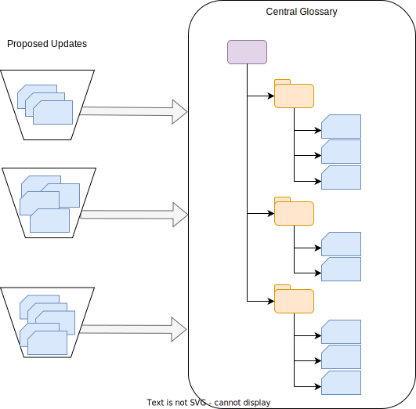
This style of glossary allows an organization to draw on the expertise from across its teams and build the glossary in an evolutionary manner.
Release controlled glossary¶
A released-controlled glossary is one where changes to the glossary terms are made through formal releases. Typically there is a dedicated team working on the glossary and they are attempting to provide a glossary that is complete, coherent and with consistent granularity of definition. Such a glossary can be used, for example, to link entities representing data fields with glossary terms via the SemanticAssignment relationship to indicate that the glossary term describes the meaning of the data stored in the data field.

Implementation¶
The different styles of glossary operation are complementary and may be used in combination allowing your approach to change as the glossary matures. For example, you may begin your glossary with the harvesting style and use the open contribution style to fill in the gaps with new terms.
This flexibility is possible because there is a simple mechanism that underpins Egeria's glossary workflow and this can be used in different combinations to create the affects described above.
Linked copies of glossary terms¶
Except the harvested glossary style, controlled glossary development requires multiple copies of the same term to be maintained so that a new version can be created and agreed on while the previous version is still in use. The copy is made from an original term using the createTermByTemplate() call. This creates a copy of the term, linked by the SourcedFrom relationship.
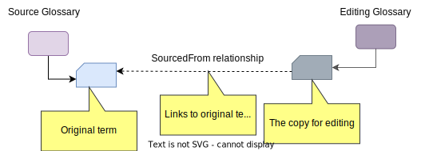
The copy of the term is typically managed in another glossary called the editing glossary. This is a glossary that holds changes while they are in progress - and for future reference.
There is also a type of glossary called the staging glossary. This is a glossary that holds changes that have been made in a source glossary and are waiting to be added to a destination glossary.
The use of either the editing or staging glossaries, and the way the copy is managed and merged into the appropriate destination depends on the style of glossary and whether you wish each published version to be retained. Care is made to copy the contents, rather than replace the term itself during these maneuvers, because terms have many relationships to other elements (such as data assets) and these relationships need to be preserved.
Temporary editing glossary¶
The first pattern of operation is where the copies are managed in a temporary editing glossary as follows:
| Action | Description |
|---|---|
 |
The copy of the term is created in the editing glossary. |
| 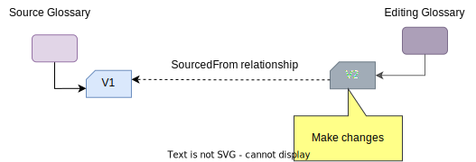 | Updates are made to the copy of the term and approved as a new version (V2). |
 |
The original term is updated to reflect the approved changed from the copy. |
| 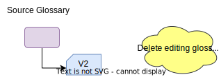 | The editing glossary is deleted, which deletes the copy of the term. |
If a batch of terms is being updated together, then the editing glossary can hold copies of all the terms being updated together. The editing glossary can be deleted when all desired changes have been made to the original terms. When a glossary is deleted, all its terms and categories are deleted too.
Rolling editing glossary¶
In this next pattern, the editing glossary maintains an audit trail of each version of the term.
| Action | Description |
|---|---|
| 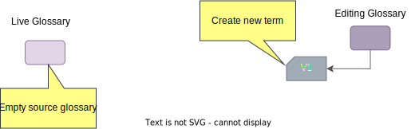 | The live glossary begins empty. Version 1 on the term is created in the editing glossary. |
| 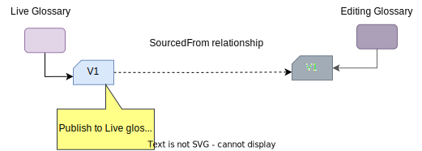 | When version 1 of the term is ready, a copy of the term is created in the live glossary. |
 |
When an update is required to the term, a copy is made of V1 in the editing glossary. |
| 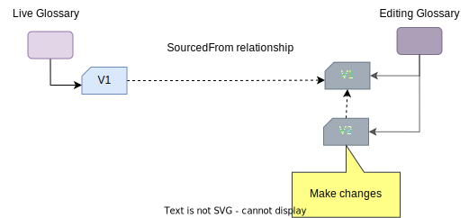 | Changes are made to V2 of the glossary term. |
| 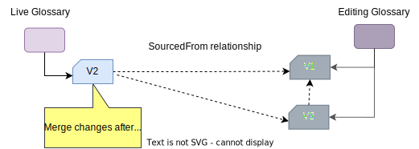 | When V2 is complete, the term in the live glossary is updated to match the content in V2 and its SourcedFrom relationship is updated to point to V2 in the editing glossary. |
Temporary staging glossary¶
The temporary staging glossary pattern of operation is where an editing glossary is used to hold the copies of terms that are proposed for including into another (destination) glossary.
| Action | Description |
|---|---|
| 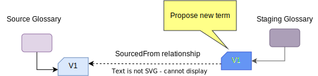 | A copy of the term to include in the destination glossary is created in the staging glossary. |
| 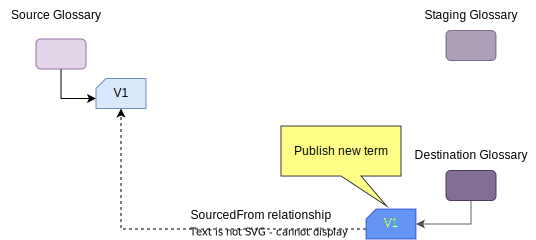 | The team that owns the destination glossary review the term and if they approve of it, they it to the destination glossary. It is still linked back to the original term in the source glossary. |
| 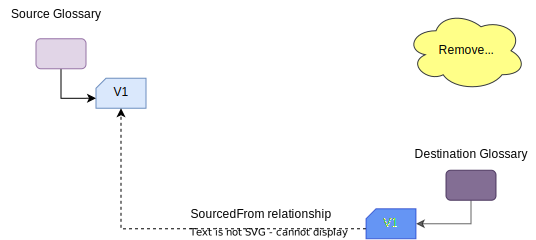 | The staging glossary is removed. |
| 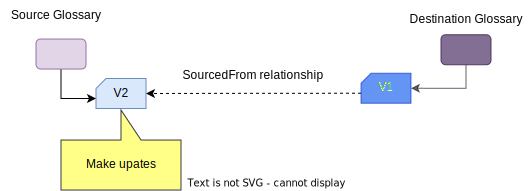 | The term in the source glossary can be updated without affecting the destination glossary's term. |
| If V2 of the term is to be included in the destination glossary, a copy of it is added to a staging glossary. | |
| 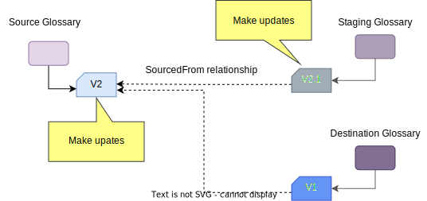 | In this case, the team that owns the destination glossary want to make some minor changes to the term. They label their updates as V2.1 to show there was a change. |
| 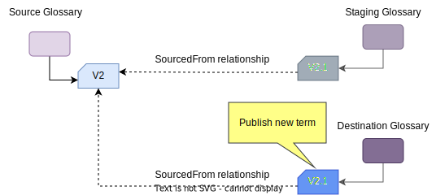 | V2.1 of the term is copied into the V1 term in the destination glossary and linked back to the V2 in the source glossary. |
| 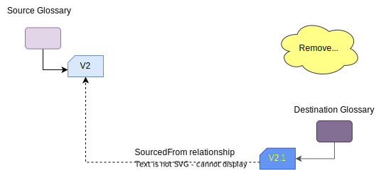 | The staging glossary is deleted, which deletes its V2.1 copy of the term. |
Rolling staging glossary¶
The rolling staging glossary pattern of operation is where an editing glossary is used to hold all versions of terms that are proposed for including into another (destination) glossary.
| Action | Description |
|---|---|
| 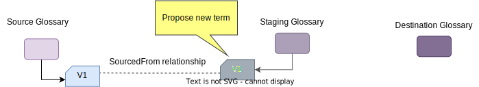 | A copy of the term to include in the destination glossary is created in the staging glossary. |
| 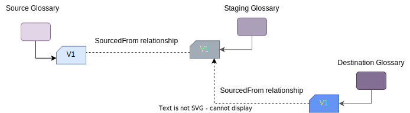 | The team that owns the destination glossary review the term and if they approve of it, they create a copy of it for the destination glossary. It is linked back to the version term in the staging glossary. |
| 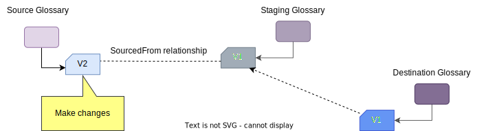 | The term in the source glossary can be updated without affecting the destination glossary's term. |
| 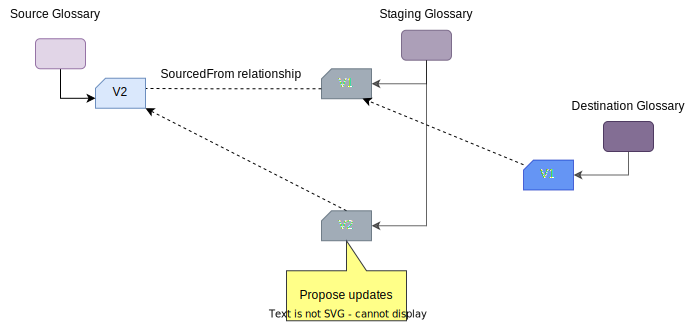 | If V2 of the term is to be included in the destination glossary, a copy of it is added to the staging glossary. |
| 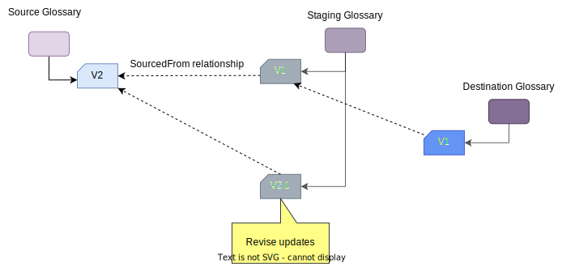 | If the team that owns the destination glossary want to make some minor changes to the term, they can do so in the staging glossary. They label their updates as V2.1 to show there was a change. |
| 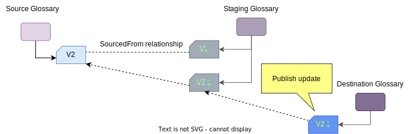 | V2.1 of the term is copied into the V1 term in the destination glossary and linked back to the V2.1 in the staging glossary. |
Controlled glossary terms¶
The patterns above show how copies of terms are linked and managed throughout the update process. While a specific term is under review it may be helpful to identify where it is in the review process.
The ControlledGlossaryTerm extends the standard GlossaryTerm with additional valid instance statuses for supporting a complex development lifecycle. The statuses are:
- DRAFT - The term is incomplete.
- PREPARED - The term is ready for review.
- PROPOSED - The term is in review.
- APPROVED - The term is approved and awaiting activation.
- REJECTED - The term is rejected and should not be used.
- ACTIVE - The term is approved and in use.
- DEPRECATED - The term is out of date and should not be used.
- OTHER - The term is in a locally defined state.
These status values can be thought of as the system-defined statuses. It is possible to replace, or extend these statuses using the userDefinedStatus attribute that can be controlled through the use of valid metadata values.
Relationship statuses¶
Similarly, the relationship between glossary terms have a status that can also be used to show where the relationship is in the review process.
- DRAFT - The relationship is under development.
- ACTIVE - The relationship is validated and in use.
- DEPRECATED - The relationship is being phased out.
- OBSOLETE - The relationship should not be used anymore.
- OTHER - The status is not one of the statuses listed above. The description field can be used to add more details.
Revision history¶
Updates to glossary terms are automatically recorded in a revision history. It is possible to add a description about a particular change through the updateDescription parameter on the update or create requests.
External workflow¶
If the approval process is complex, you may wish to control it through a workflow engine that is running outside of Egeria. There are two basic approaches.
In the first example shown below, the request for approval of a change results in a governance action service running in an engine host. This governance action service gathers information about the change to be approved and passes it to the external workflow engine. Then depending on the capabilities of the external workflow engine, it then polls for a result, or registers a listener, so it is notified of the result. When the decision is made, the governance action service is informed of the result. It makes the necessary changes to the glossary.
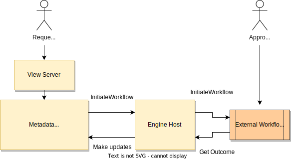
This approach provides a simple integration path that acts when the external process is complete. However, you may choose to have the updates to the glossary made by the workflow process itself during its execution. This may be useful if the process is approving a large batch of terms, for example, and the decisions for each term need to be recorded as they are made (rather than at the end). This second approach shown below has the external workflow process calling the Asset Manager OMAS during the process execution.
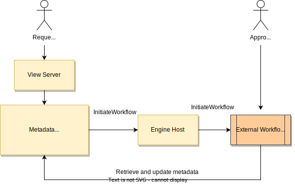
The Asset Manager OMAS is the same service called by the Glossary Workflow OMAS.
Raise an issue or comment below